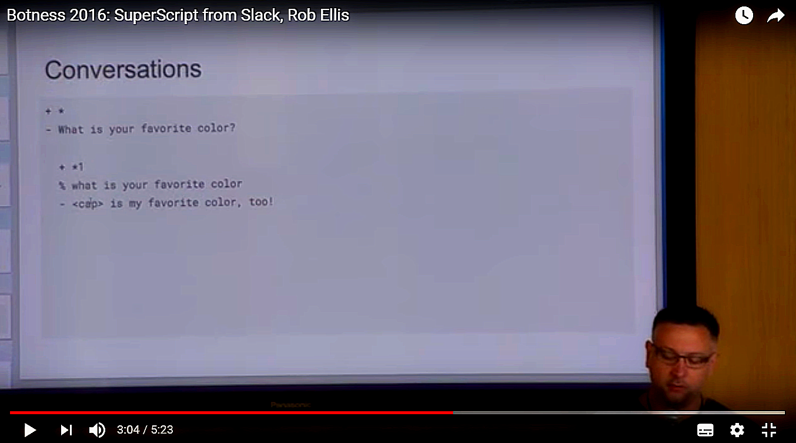

Supescriptjs as dialog script / knowledge interchange language

Hi Rob!
I only recently discovered www.superscriptjs.com. I like your tech structured solution(s) and above all I thank you for sharing your code / work under MIT full open-source licence:
The reason I’m writing here his also to thanks for your notes on github page:
SuperScript is based off of a fork of RiveScript with idiom brought in from ChatScript. Without the work of Noah Petherbridge and Bruce Wilcox, this project would not be possible.
About the story, possibly starting long ago by Richard Wallace’ AIML, I read with pleasure your previous articles about chatbot language story:
and previously I enjoyed Noah Petherbridge’s story: https://www.rivescript.com/history
Now, tech points a part (I’ll submit some notes on superscript github on that), here to mainly ask you a question:
It seems to me that superscript language come after your analysis on preexistent similar projects: AIML (1.0, 2.0. IBMWatson…), Bruce Wilcox’s chatScript (https://t.co/qD658YzaOO), Noah Petherbridge’s rivescript (All huge works)!
That’s correct ?
I think eventually superscript summarize many features of mentioned languages, coming on a simple (for non developers) chatbot dialog script description language that could possibly act also as a (open-source) format for open-”data” dialogs apps.
What I see as interesting (in chatbot dev realms) is decoupling the dialog script front-end from the application logic behind (back-end developed in usual programming language, nodejs in your case). See brief conversation with Matty Mariansky here:
Wwhat do you think about a possible open project where superscript (just only as the .ss file format) could be the common interchange format of a sort of dialog on-source database ? Make sense ?
Last but not least:
Road to 1.0
This includes the graph knowledge base, fact system, and bot facts as well as user and message objects, and robust plugin system.
BTW, I appreciate the plugin way (external functions) that allow what I call #transactionalBots, interfacing backend services (even if as Ruby developer I have to convert myself to nodejs or propose you an interlanguage (extra-node) plugin architecture :) ).
An the knoledge base (and database decision) I know is huge topic too.
What is the superscript next step ? :)
All the best for your art!
With respect
giorgio
Originally published on Medium.